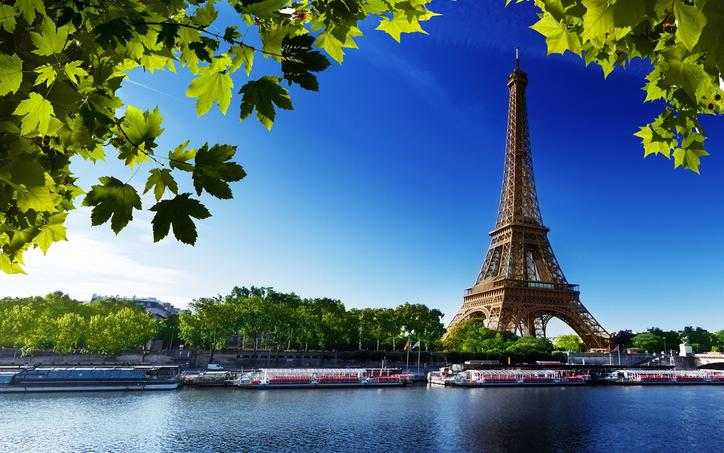

My Favourite Place |
||
|---|---|---|
| Home About Me Contact Images | ||
Internal LinksExternal Links |
 My favourite place is France, a beautiful country in Europe. France is famous for its rich history, beautiful landscapes, delicious food, and amazing buildings. The capital city of France is Paris, which is one of the most famous cities in the world. One of the most beautiful attractions in France is the Eiffel Tower. It is a famous symbol of France and attracts many visitors every year. France also has beautiful museums, palaces, gardens, mountains, and beaches. France is my favourite place because it is beautiful, peaceful, and full of interesting places to explore. I hope that one day I will get the opportunity to visit France and create wonderful memories there. |
|
|
Karma Dema Contact No: 77811017 201.00350.17.0012@education.gov.bt |
||